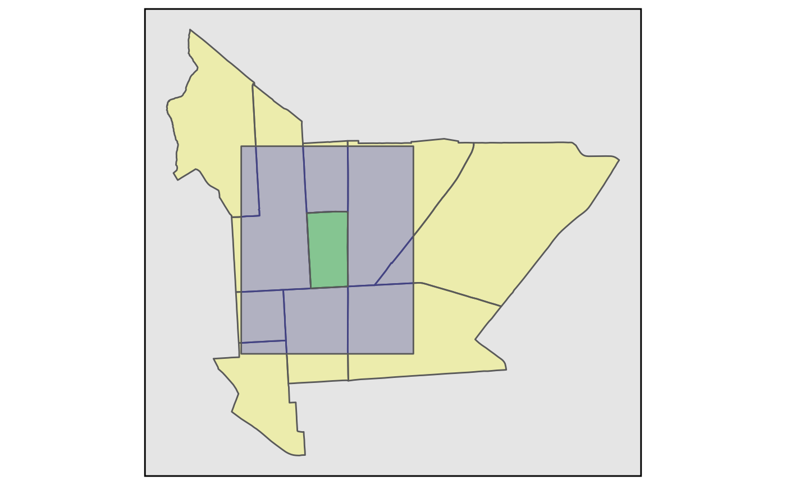
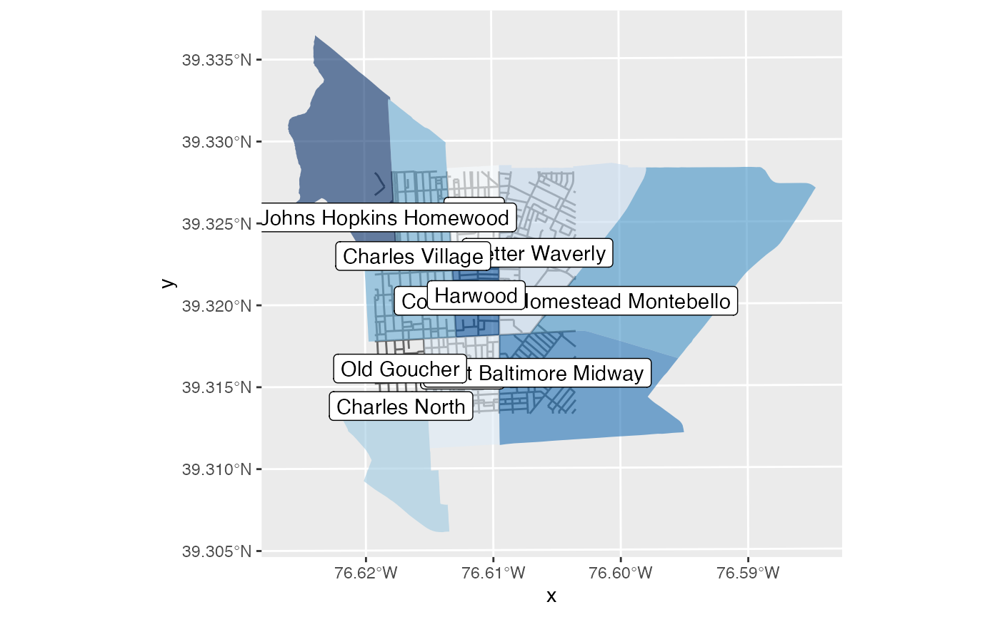
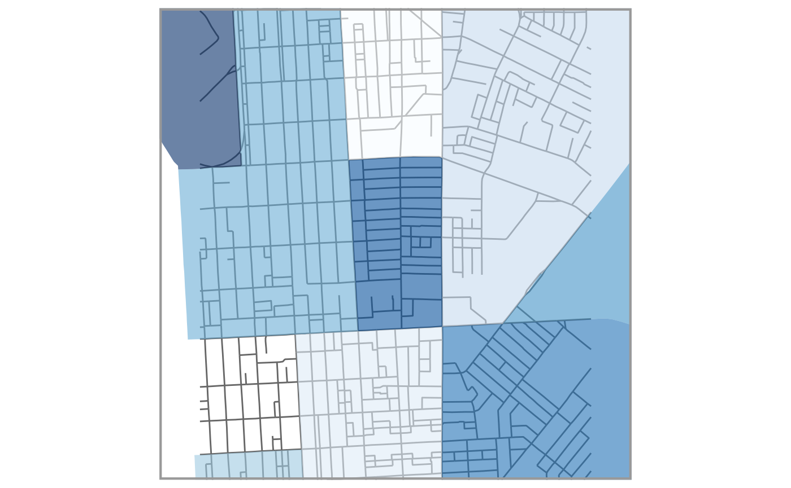
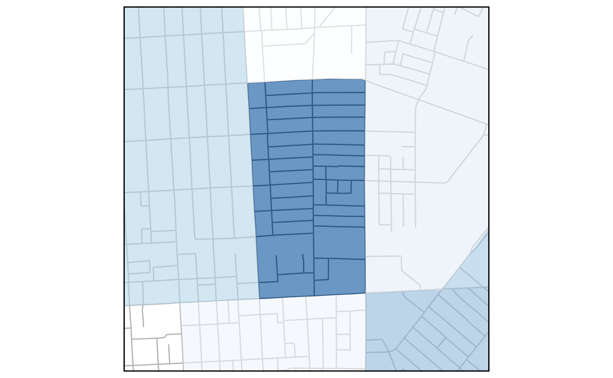
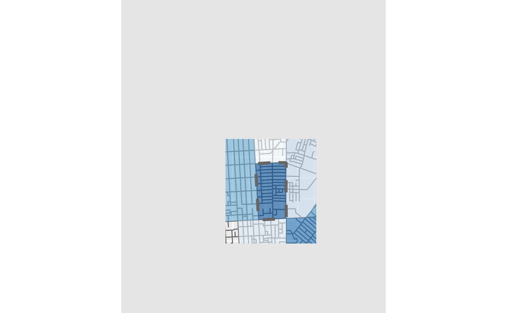

Map layout and themes with ggplot2 utility functions
ggsave_ext.RmdGetting started
Set parameters for the map and location
overedge is designed to easily support a workflow where the page or image size, page margin, and map area (defined by the location along with dist and diag_ratio parameters) are used repeatly across a range of related functions map making and layout functions.
# Set initial parameters
params <-
list(
paper = "Instagram post",
margin = "narrow",
name = "Harwood",
type = "neighborhoods",
package = "mapbaltimore",
source = "Baltimore City",
dist = NULL,
diag_ratio = 0.75
)In this example, the location name, location type, and package with the type data are used to get an sf object for a Baltimore neighborhood.
# Create wrapper function to get neighborhood
get_neighborhood <- function(name = NULL, location = NULL) {
get_location(
type = params$type,
package = params$package,
name = name,
location = location
)
}
# Use the get_neighborhood wrapper function to get the neighborhood named in param
params$neighborhood <-
get_neighborhood(name = params$name)Additional parameters can be derived based on the preliminary parameters and geometry. For example, page orientation can be based on the aspect ratio of the buffered bounding box for the named location. The aspect ratio for a location map is based on the combination of the paper, margin, and orientation. The overall bounding box for the map area requires the distance or diagonal ratio and the aspect ratio.
# Get appropriate orientation based on buffer parameters
params$orientation <-
sf_bbox_asp(
bbox = st_bbox_ext(
x = params$neighborhood,
dist = params$dist,
diag_ratio = params$diag_ratio
),
orientation = TRUE
)
# Get aspect ratio for content block based on paper size, margin, and orientation
params$block_asp <-
get_asp(
paper = params$paper,
unit = params$unit,
margin = params$margin,
orientation = params$orientation,
block_asp = TRUE
)
# Get additional parameters based on the paper (used in later sections of this vignette)
params$paper_df <-
get_paper(
paper = params$paper,
orientation = params$orientation
)
params$asp <- params$paper_df$asp
params$width <- params$paper_df$width
params$height <- params$paper_df$height
# Get map bounding box for neighborhood based on adjustment parameters
block_bbox <-
st_bbox_ext(
x = params$neighborhood,
dist = params$dist,
diag_ratio = params$diag_ratio,
asp = params$asp_block
)
# Get nearby neighborhoods that overlap with the buffer and aspect ratio adjusted bounding box
nearby_neighborhoods <-
get_neighborhood(
location = block_bbox
)A quick map is helpful for illustrating the relative size and proportion of the different simple feature objects and bounding boxes created through this process:
ggplot() +
layer_location_data(
data = "baltimore_city_detailed",
package = "mapbaltimore"
) +
geom_sf(data = nearby_neighborhoods, alpha = 0.25, fill = "yellow") +
geom_sf(data = sf_bbox_to_sf(block_bbox), alpha = 0.25, fill = "blue") +
geom_sf(data = params$neighborhood, alpha = 0.25, fill = "green") +
layer_neatline(
data = nearby_neighborhoods
)
In this example, the objects block_bbox and nearby_neighborhoods are as separate objects but could easily be added to the list of parameters. The approach of using parameters is intended to make this code easy to reuse for a parameterized RMarkdown document.
In some cases, it may be convenient to wrap an overedge function with preset parameters or use purrr::partial() for a similar purpose:
# Use partial to create a version of layer_location_data that applies a half-mile buffer to the specified neighborhood
layer_half_mi_buffer <-
purrr::partial(
layer_location_data,
location = params$neighborhood,
dist = 0.5,
unit = "mi",
diag_ratio = NULL,
asp = get_asp(paper = "letter", orientation = "landscape")
)This can be helpful in reducing repetition when setting up maps but it also can get confusing so use this approach with care.
ggplot() +
layer_half_mi_buffer(
data = params$type,
package = params$package,
aes(fill = name),
alpha = 0.75
) +
guides(fill = "none") +
theme_void()
Make a map
Create a basemap and label layer
In order to maintain some flexibility in the map layout process, it may be helpful to set up a basemap that covers a larger area. This example illustrates how to combine street center line data, neighborhood boundaries, and labels for residential neighborhoods into a larger basemap centered on the selected neighborhood.
basemap <-
ggplot() +
layer_location_data(
location = block_bbox,
data = "streets",
package = "mapbaltimore",
color = "gray40"
) +
layer_location_data(
data = nearby_neighborhoods,
mapping = aes(fill = name),
color = NA,
alpha = 0.6
) +
scale_fill_brewer() +
guides(
fill = "none"
)
basemap
#> Warning in RColorBrewer::brewer.pal(n, pal): n too large, allowed maximum for palette Blues is 9
#> Returning the palette you asked for with that many colors
layer_location_data() is a flexible wrapper function around several different types of geoms for sf objects including geoms from ggrepel and geomtextpath. This makes it easy to create separate layers for a basemap, labels, or other features.
label_layer <-
layer_location_data(
location = block_bbox,
data = "neighborhoods",
package = "mapbaltimore",
geom = "label",
mapping = aes(label = name),
fn = ~ dplyr::filter(
.x,
name %in% nearby_neighborhoods$name,
type == "Residential"
),
fill = "white",
color = "black"
)
basemap +
label_layer
#> Warning in RColorBrewer::brewer.pal(n, pal): n too large, allowed maximum for palette Blues is 9
#> Returning the palette you asked for with that many colors
Add a neatline, location mask, or location boundary
After creating any needed layers for a map, you may want to focus on a specific area and clean up the appearance of the map by removing grid lines and axis labels. The layer_neatline() function makes it easy to effectively “zoom” in to a specific area while hiding the grid lines and axis labels.
neighborhood_map <-
basemap +
# Draw a neatline around the selected neighborhood
layer_neatline(
data = params$neighborhood,
diag_ratio = params$diag_ratio,
asp = params$paper_df$asp,
size = 1.5,
color = "gray60",
expand = TRUE
)
neighborhood_map
#> Warning in RColorBrewer::brewer.pal(n, pal): n too large, allowed maximum for palette Blues is 9
#> Returning the palette you asked for with that many colors
Two other functions (layer_mask() and layer_show_location()) allow you to add layer_neatline() to a map along with a mask or location boundary line using the same parameters.
basemap +
layer_mask(
data = params$neighborhood,
dist = 200,
asp = params$asp,
neatline = TRUE
)
#> Warning in RColorBrewer::brewer.pal(n, pal): n too large, allowed maximum for palette Blues is 9
#> Returning the palette you asked for with that many colors
letter_map <-
basemap +
layer_show_location(
data = params$neighborhood,
dist = 200,
size = 1.5,
asp = get_asp(paper = "letter", margin = c(2, 1, 1.5, 1), block_asp = TRUE),
neatline = TRUE
)Add margins
The last step is to add margins. Margins can also include a header and footer to ensure there is sufficient space for a title, subtitle, and caption.
letter_map +
theme_margin(
paper = "letter",
margin = "standard",
header = 1,
footer = 0.5,
fill = "gray90"
) # +
#> Warning in RColorBrewer::brewer.pal(n, pal): n too large, allowed maximum for palette Blues is 9
#> Returning the palette you asked for with that many colors
# labs_ext(
# title = "{params$name} and nearby neighborhoods",
# caption = "Data courtesy {params$source}."
# )The resulting map appears oddly proportioned at the display size for this vignette but the units ensure the margin is appropriately sized for the paper size provided.
Export a map
Finally, the ggsave_exif() function uses the make_filename() function also used by write_sf_ext() to create consistent file names that can optionally include a date or date-time prefix.
make_filename(
name = "Neighborhood map",
label = params$name,
prefix = "date"
)
#> [1] "2022-03-04_harwood_neighborhood_map"Save map with ggsave_ext
The dimensions of the exported file may be set automatically based on paper and orientation. The title and author parameter are used to update the EXIF metadata for the file after it is exported. The title and author are both evaluated with glue() which allow you to use the same parameters to label and title the map.
ggsave_ext(
plot = neighborhood_map,
name = "Neighborhood map",
label = params$name,
title = "Map of {params$name} and surrounding area",
author = "Eli Pousson",
paper = params$paper,
orientation = params$orientation,
device = "png",
prefix = "date",
exif = TRUE,
bg = "white"
)